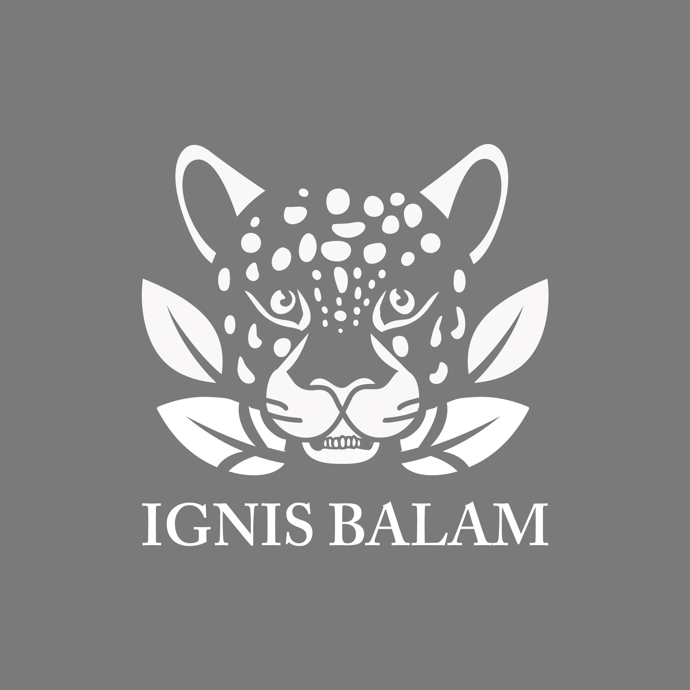
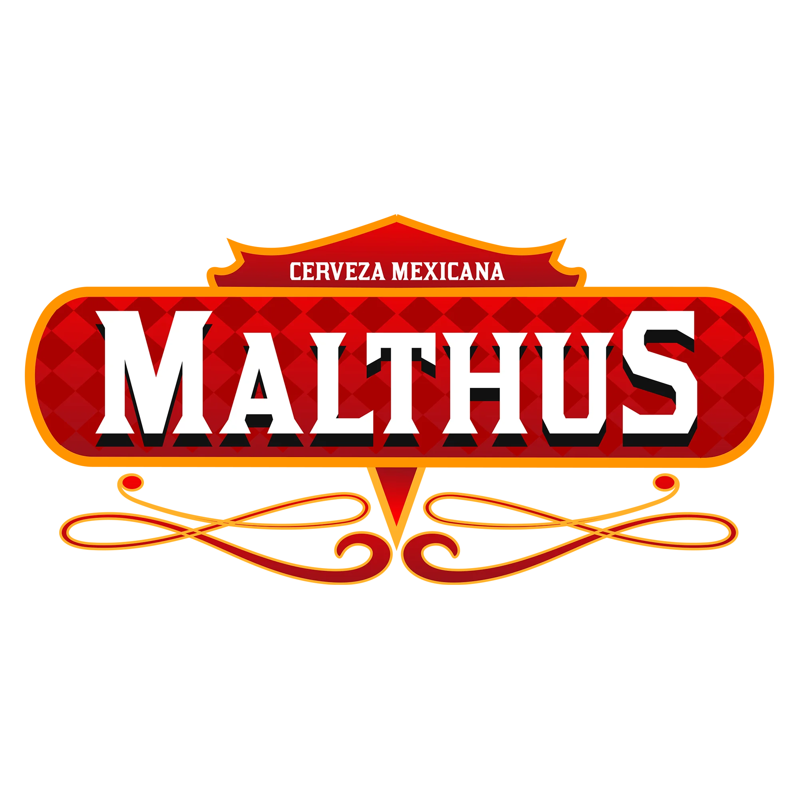
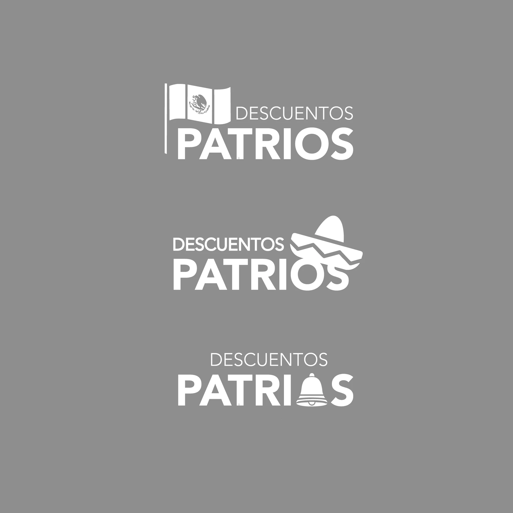

LOGOFOLIO
Explora mis diseños de logotipos, identidad visual y branding.
SENSI HOME
SENSI HOME es una mueblería que cuenta con 1 showroom y una bodega en Guadalajara, Jalisco...
Ver más
Rodmans Thrift Market
Identidad visual enfocada en sostenibilidad y estilo retro, pensada para un mercado de segunda mano.
Ver más
IGNIS BALAM
Proyecto de identidad con inspiración en iconografía prehispánica y paleta vibrante.
Ver más
Malthus
Malthus es una cerveza artesanal de origen Jalisciense que surgió en 2022, con un enfoque en la calidad y el sabor auténtico.
Ver más
NEWCONCEPT EDITIONS
Editions fue una línea de sillones por la empresa de fabricación e importación de muebles NewConcept.
Ver más